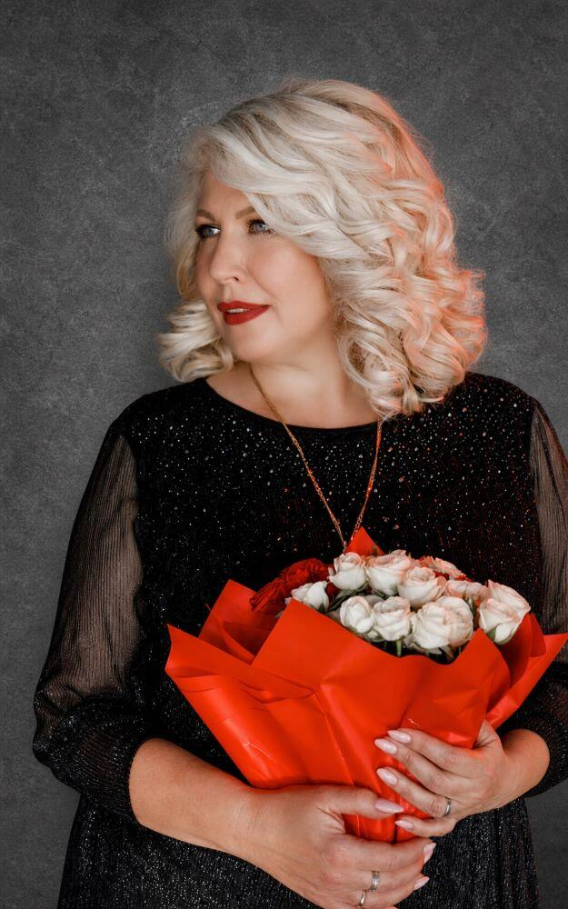
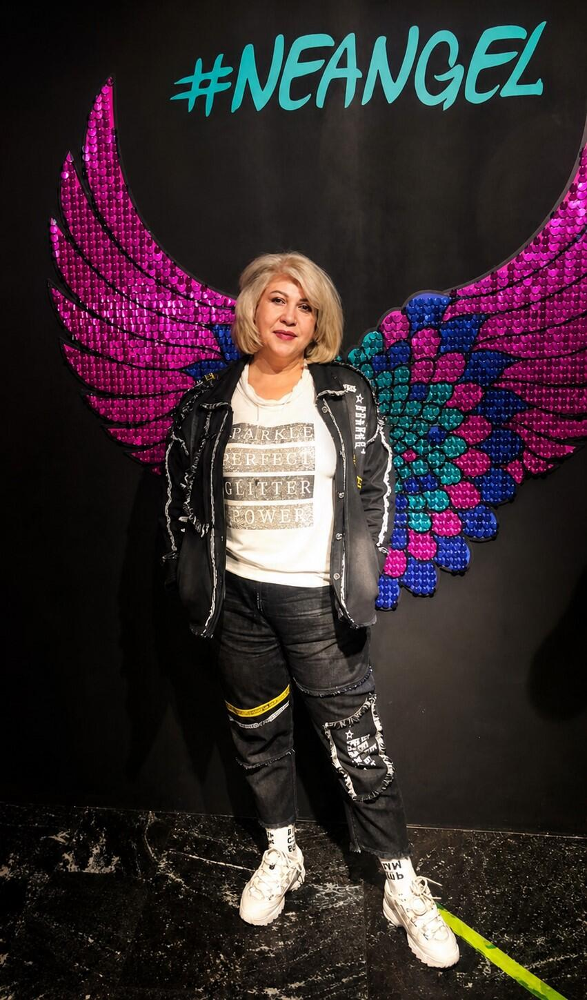
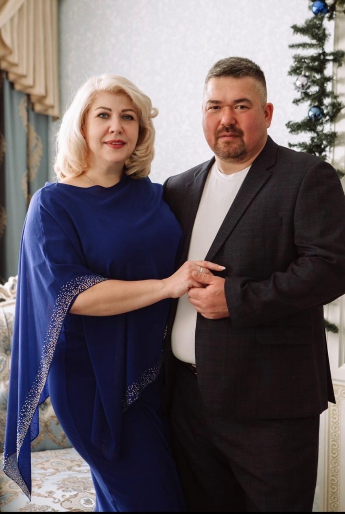
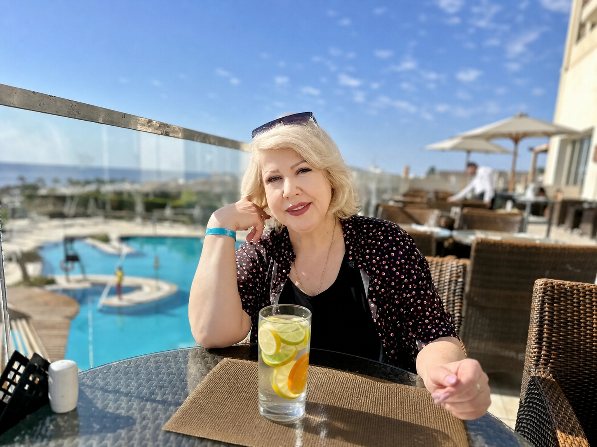
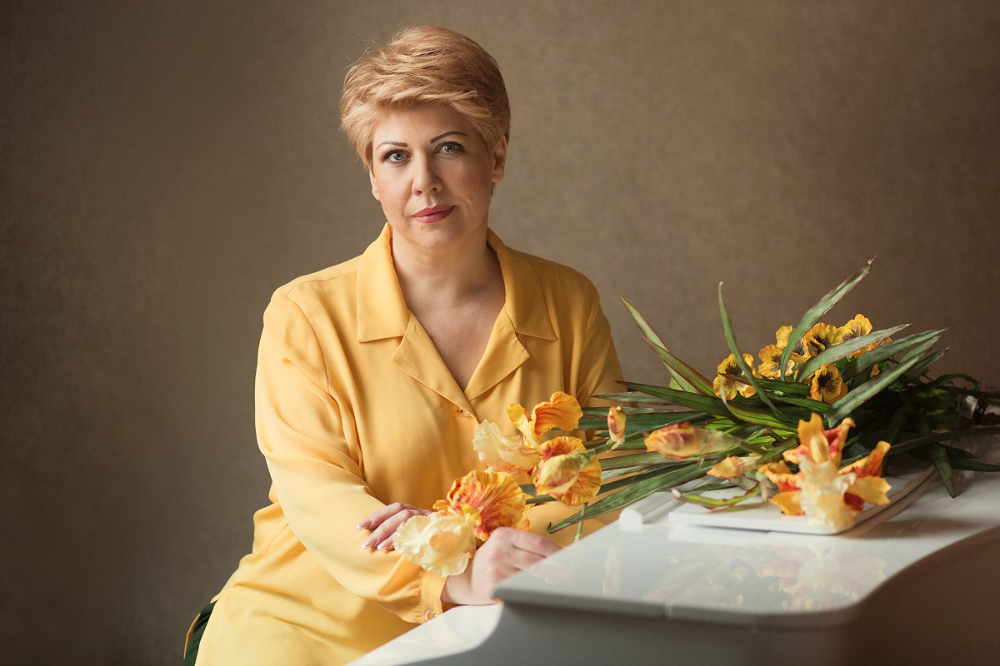
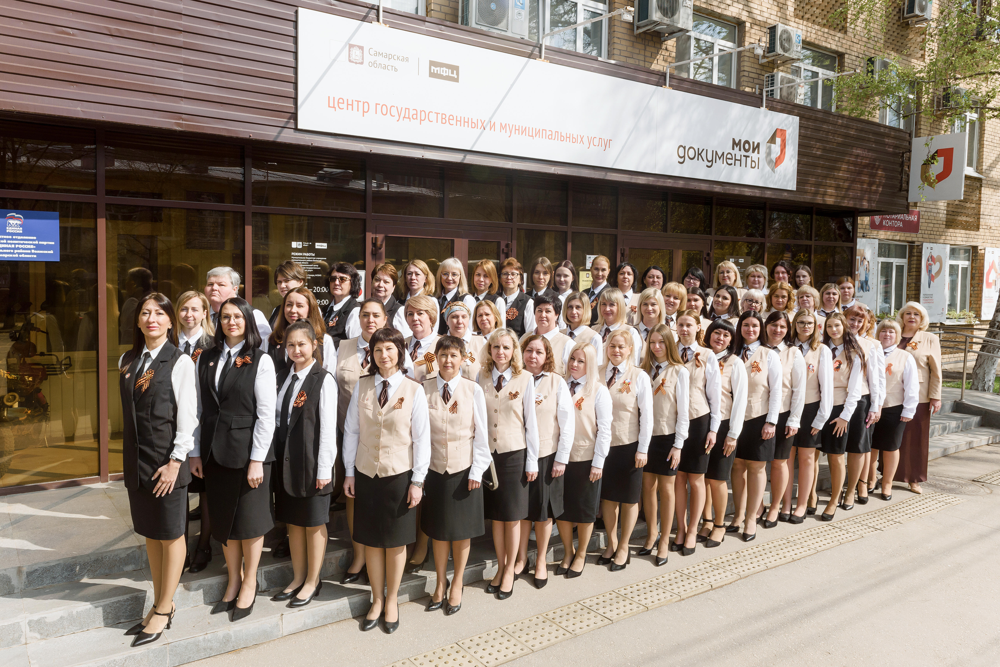

Есть руководители, которых уважают. Есть руководители, которых ценят. И есть люди, которых любят всем сердцем. Именно таким человеком для коллектива стала Ирина Александровна.
В каждом коллективе есть свои традиции, и наша главная традиция начинается с обращения. Для нас есть только один правильный вариант — Ирина Александровна. Это не просто дань этикету, а символ нашего искреннего уважения, признания её авторитета и мудрости.
За этими словами стоят годы совместной работы, решения сложных задач и тот невидимый стержень, который держит всю команду.
Но, как это часто бывает в больших и дружных семьях, у официального имени есть свой теплый двойник. В узком кругу, за закрытыми дверями кабинета или на неформальных встречах, мы зовём её иначе.
Для нас она — наша Мама. С большой буквы. И это не панибратство, это высшая степень доверия.
Мама, которая переживает за каждый проект, мама, которая накормит идеями и согреет заботой. Ведь только родному человеку можно доверить самое сокровенное, а ей мы доверяем всё — от рабочих планов до личных переживаний.
Иногда одно официальное имя говорит о должности, а одно тёплое слово — о месте человека в сердце целого коллектива.

Если бы нас попросили описать Ирину Александровну одним словом, мы бы долго спорили. Потому что одного слова мало. В ней удивительным образом сплелись качества, которые редко встречаются в одном человеке.
Та, что позволяет держать удар и вести корабль компании даже в самый сильный шторм.
Когда она ставит цель, весь коллектив знает: мы её достигнем, потому что она не умеет сворачивать с пути.
Она видит на десять шагов вперед и знает, когда стоит сказать решающее слово.
Ей можно доверить любой спор, потому что она всегда разберется по-честному.
За сухими цифрами отчетов и жесткими дедлайнами она всегда видит живых людей, их переживания и радости.
Её поддержка и доброе слово согревают больше, чем любой бонус, а искренняя радость за наши успехи окрыляет.
Именно оно помогает нам не утонуть в серьезности будней и помнить, что жизнь прекрасна во всех её проявлениях.
Плечо, на которое можно опереться, и рука, которая не дрогнет в трудную минуту.
И всё это — в одной удивительной женщине, нашей Ирине Александровне. Вот она, настоящая формула лидера и просто родного человека.
У каждого великого человека есть свои крылатые выражения. У нашей Ирины Александровны их целый арсенал. Мы давно перестали воспринимать их просто как слова — это уже мантры, кодекс и путеводитель по жизни.
Самая любимая (и, пожалуй, самая эффективная) фраза — «Не расхолаживаемся!». Удивительно, как четыре слога могут мгновенно вернуть тонус всему офису.
Стоит нам чуть выдохнуть, размечтаться или позволить себе лишнюю минуту покоя, как раздается этот мягкий, но такой проницательный голос. И всё — мы снова собраны, снова в тонусе и выдаем результат на все 1000%. Она буквально чувствует атмосферу каждой клеточкой, и эта её суперспособность спасает нас от собственной лени.
Это не просто требование — это философия. С ней мы перестали видеть преграды и научились искать пути.
Теперь, когда случается проблема, мы уже знаем: прежде чем идти с жалобой, нужно набросать хотя бы три способа её решения.
И, конечно, привычка, которая вызывает у нас восхищение: она всегда знает, когда мы «расслабились».
Мы не обижаемся, наоборот — мы благодарны. Ведь благодаря этим её привычкам и фразам мы каждый день становимся чуточку сильнее, умнее и собраннее.
Можно быть блестящим руководителем, гениальным стратегом и жестким переговорщиком. Но если за всем этим не стоит настоящая человеческая душа — коллектив никогда не станет семьей.
Нам повезло, потому что Ирина Александровна — это редкое сочетание профессионала высочайшего уровня и удивительного, большого сердца.
Мы ценим её не только за то, как она ведет компанию. Мы ценим её за то, какой она человек.
В первую очередь — за искреннюю доброту. Не показную, не дежурную, а настоящую, идущую изнутри. Ту, которая чувствуется в каждом её слове, в каждом взгляде.
Она не просто отдает распоряжения — она переживает. Болеет за каждого, будь то серьезный проект или просто трудный день у сотрудника.
Её желание помочь — это не просто слова. Она всегда найдет время выслушать, подставить плечо, дать совет, по-человечески — тепло и участливо.
Она помнит о дне рождения каждого, переживает, если кто-то заболел, и искренне радуется нашим маленьким победам.
В мире, где часто правят холодный расчёт и бездушные цифры, Ирина Александровна доказывает: успех организации строится на любви и уважении к людям. И за это мы благодарны ей бесконечно.

Говорят, что начальник должен быть строгим и держать дистанцию. Наверное, в учебниках по менеджменту так и написано. Но Ирина Александровна, как всегда, пишет свои собственные правила — правилами души.
Мы честно пытались вспомнить хоть один случай, хоть один единственный раз, когда она не пришла бы на помощь. И не смогли. Потому что такого просто не было.
За все годы её работы в нашем МФЦ не случилось ни одной ситуации, чтобы она отвернулась, отмахнулась или сказала: «Разбирайся сам».
Она всегда первая замечает, что у сотрудника что-то не так. Первая подходит, первая спрашивает, первая предлагает выход.
Неважно, в какое время суток это происходит и насколько загружен её собственный день. Если кто-то из команды оказывается в сложной ситуации — она уже рядом. Причём поддержка приходит разная.
Иногда это крепкое деловое плечо: «Давай разберемся вместе, я помогу решить эту проблему». Иногда — мудрый совет, который расставляет всё по местам. А иногда — просто тёплое слово, искреннее участие и понимание, которое лечит лучше любых инструкций.
Мы знаем: если случилась беда, если запутался в отчетах, если клиент довел до отчаяния или просто тяжко на душе — есть человек, который не оставит в беде. В любое время, в любой ситуации, с любым вопросом. И этот человек — наша Ирина Александровна.
Поддержка без исключений. Помощь без условий. Так бывает только в настоящей семье.
В работе МФЦ спокойных дней не бывает. Это аксиома. Но есть ситуации, которые выходят за рамки обычного аврала — когда всё идет кувырком, планы рушатся, а у сотрудников опускаются руки. И вот тогда, словно по волшебству, появляется Она.
Ирина Александровна — человек-стабилизатор. Когда весь коллектив в панике, когда нервы на пределе, а кажется, что выхода нет, она сохраняет ледяное спокойствие.
И это не холодная отстранённость — это мудрая уверенность, которая передаётся каждому из нас. Пока мы мечемся в поисках решения, она уже знает, что делать, и просто идёт и решает.
Причём идёт без страха. Если нужно — к самому высокому руководству, чтобы отстоять интересы МФЦ и сотрудников. Если нужно — берёт в руки шпатель и сама делает ремонт, который ждали годами. Никаких «это не моя работа» или «пусть другие». Нет. У неё простое правило: раз надо — делаю.
Но самый яркий пример её характера — это, конечно, ковид. В то время, когда по всей стране МФЦ закрывались один за другим, наше отделение не закрылось ни на один день.
И это при том, что внутри отделения в самый разгар пандемии шёл капитальный ремонт. Строительная пыль, шум, перестановки, хаос — а приём людей продолжался.
Сотрудники переезжали с места на место... четыре раза! Четыре раза за короткий срок мы меняли локации внутри собственного офиса. Но каждый день, каждую минуту двери были открыты для людей.
И всё это — благодаря Ирине Александровне. Её воле, её организованности и её нечеловеческой способности находить решение там, где его, казалось бы, нет.
Мы помним этот период с особым чувством гордости. Потому что тогда мы не просто коллеги — мы стали одной командой, готовой на всё. А вдохновила, собрала и повела за собой нас именно она. Без страха, без паники, с ясной головой и горячим сердцем.

Там, где другие растерялись, она сохраняла свет и вела вперёд.
Каждый человек состоит из мелочей. Из тех самых «фишечек», которые делают его неповторимым. У Ирины Александровны таких фирменных штрихов много, и мы их очень любим. Начнём с гастрономических пристрастий.
Её любимые конфеты — «Золотая лилия». Заметили давно и теперь всегда знаем, что можно порадовать в праздник. Но главный напиток в её жизни — это, конечно, апельсины и лимоны, залитые водой. Это не просто витаминный напиток — это её личная «зарядка». Вместо обычной воды — только такой ароматный и полезный микс. Мы уже привыкли видеть на её столе прозрачный кувшин с цитрусовыми дольками, и без этой картины офис кажется каким-то неполным.
Что касается цветов, Ирина Александровна не из тех, кто ждёт срезанных букетов в вазе (хотя их мы, конечно, тоже дарим). Её сердце принадлежит цветам в горшках. Живым, зелёным, настоящим. Она любит ухаживать за ними, наблюдать, как они растут и цветут. Это маленькая оранжерея в её кабинете, частичка домашнего уюта.
А главное хобби, о котором знают все, — это дизайн и строительство. Причём в равной степени и дома, и на работе. Если в отделении затевается перестановка, ремонт или обновление пространства — будьте уверены, Ирина Александровна будет в центре событий, как дирижёр, который слышит каждый инструмент своего оркестра. Она не просто руководит процессом — она живёт им. Подбирает цвета, продумывает планировку, знает, где что должно стоять, чтобы было и красиво, и удобно. Это её творчество, её способ создавать уют и гармонию вокруг себя.
Наверное, именно поэтому у нас в МФЦ всегда так тепло и по-домашнему — потому что частичка её души вложена в каждую деталь.


Оглядываясь назад, мы с удивлением понимаем: жизнь нашего МФЦ делится на «до» и «после». «До» — это было просто место работы. «После» — это целая вселенная, которую создала одна удивительная женщина.
С приходом Ирины Александровны всё начало меняться. Сначала незаметно — как первые лучи рассвета, которые ещё не заметны, но уже меняют цвет неба. А потом — стремительно и необратимо. Она не просто пришла руководить — она пришла созидать. И под её чутким руководством отделение расцвело буквально на глазах.
Качество услуг вышло на совершенно новый уровень. Мы перестали быть просто пунктом приёма документов — мы стали настоящим центром помощи и сервиса, где каждому посетителю уделяют внимание и заботу.
И это признали не только наши клиенты, но и профессионалы: наше МФЦ стало ежегодно занимать призовые места в престижных профессиональных конкурсах. Мы входим в число лучших — и это не просто строчка в отчёте, это наша общая гордость.
Но победы в конкурсах — это лишь вершина айсберга. Внутри произошла настоящая революция.
Пришла новая техника, которая ускорила работу в разы. Появилась новая мебель — удобная, красивая, современная. Наш офис перестал быть казённым учреждением и превратился в стильное, светлое пространство, куда приятно приходить и сотрудникам, и посетителям.
Изменился и внешний вид специалистов. Вместе с обновлением офиса пришло понимание: мы — лицо МФЦ, и выглядеть мы должны соответственно. Ирина Александровна научила нас гордиться своим делом и своим внешним видом. Теперь мы не просто сотрудники — мы команда профессионалов, которые знают себе цену.
И, конечно, самое главное — изменились зарплаты. Ирина Александровна всегда знала: чтобы люди работали с душой, нужно ценить их труд по-настоящему. И она сделала всё, чтобы мы чувствовали эту заботу не только морально, но и материально.
Но самое удивительное даже не в технике, мебели или зарплате. Самое удивительное — как она изменила нас.
Изменился не только офис. Изменились мы сами. Под её руководством мы росли, учились, становились лучше, увереннее, профессиональнее — так, как растёт дерево, которое наконец получило достаточно света.
Она вдохнула в каждого из нас веру в свои силы и желание быть лучшим в своём деле.
Ирина Александровна не просто изменила МФЦ. Она создала команду, которой по плечу любые задачи. Она воспитала в нас чувство ответственности, гордости и любви к своей работе.
И оглядываясь на этот путь — от первых дней её прихода до сегодняшнего дня — мы понимаем: это была настоящая эпоха перемен. Эпоха, которую создала она. Для нас, вместе с нами и благодаря нам.
Нажми на цветок, чтобы получить пожелание. У каждого их несколько — жми ещё раз, откроется новое.
Пусть каждый новый день приносит Вам тепло, вдохновение и ощущение внутренней гармонии.
Тот самый коллектив, о котором эта история. Тот самый коллектив, который Вы вырастили.

Мы её собрали для одного-единственного человека на свете. Нажмите — и она раскроется.
Сегодня — Ваш день. Хочется сказать много и сразу, но пусть эти строки скажут за нас.
Спасибо за каждое утро, за доверие, за мудрость и за ту атмосферу, которую Вы создали вокруг себя.
Пусть новый год Вашей жизни будет самым светлым — на здоровье, любовь и радость.
❦ Нажмите ещё раз, чтобы закрыть ❦
Мы не стали переписывать эти слова гладким редакторским языком. Пусть они прозвучат так, как их произнесли — от сердца.
← Листайте, чтобы прочитать все поздравления →